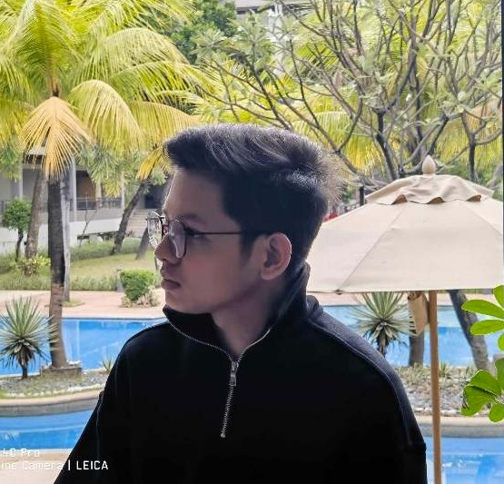

Hi there, my name is Zeus John Rigo, and I attend National University to study information technology. I have a strong interest in learning about the constantly changing field of technology and its applications as an IT student. I enjoy a challenge, and I'm always learning and adjusting to the ever-changing IT industry. I'm eager to share my knowledge and abilities, and I'm pursuing a career in the fascinating field of information technology.
I'm a 20 years old student Information Technology (IT) student at a university. Known for their enthusiasm and curiosity for technology, I'm traveling to discover the wide world of IT while continuously trying to learn new things and broaden my knowledge.
From 2016 to 2021, I attended Lagro High School, from which I graduated. Currently, I attend National University, where I am enrolled in an Information Technology course.
I often find comfort in the art of sketching and drawing during my free time or when I'm bored. Animation is a creative endeavor that I have experience with and found captivating in the past. These days, I primarily concentrate on digital art, where I get lost in the seemingly endless possibilities provided by technology. Although I have dabbled in traditional art, my current passion is the ever-changing and dynamic field of digital creativity.
My main pastime is playing video games; this is a hobby that I have incorporated into my life ever since I started my IT studies. But my interests go beyond just the digital world; I also enjoy using sketching and drawing to express my creativity, which helps me balance my tech-focused coursework with my artistic pursuits.
Feel free to get in touch with me. You can reach me via email at rigozeusjohn@gmail.com or by phone at 09081642987 Connect with me on social media for more updates.